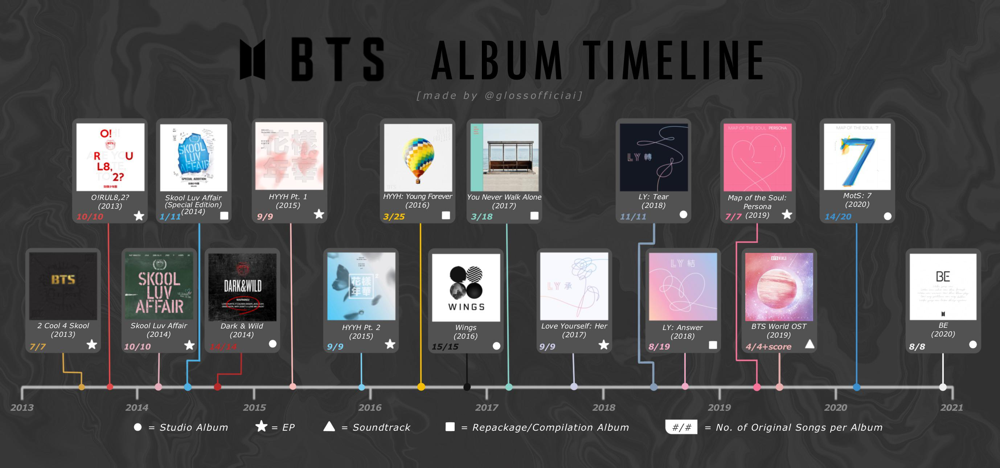

BTS
BTS

¿Quiénes son?
BTS, también conocidos como Bangtan Sonyeondan o “Bulletproof Boy Scouts”, es un grupo surcoreano formado por siete integrantes: RM, Jin, Suga, J-Hope, Jimin, V y Jungkook. El grupo debutó el 13 de junio de 2013 bajo la empresa Big Hit Entertainment (actualmente HYBE). Originarios de Corea del Sur, sus miembros nacieron entre 1992 y 1997, lo que los coloca actualmente entre finales de los 20 y principios de los 30 años. BTS no solo es conocido por su música, sino también por su impacto global, su conexión con los fans (ARMY) y su influencia en temas como la salud mental, la autoestima y el amor propio.
Su unión como BTS
La formación de BTS comenzó alrededor de 2010 cuando Big Hit Entertainment decidió crear un grupo de hip-hop centrado inicialmente en RM. A lo largo de los años, se fueron incorporando los demás miembros mediante audiciones, castings y reclutamiento, cada uno aportando habilidades únicas en canto, rap, baile y producción. El proceso de entrenamiento fue riguroso, con años de preparación antes de su debut oficial en 2013 con la canción “No More Dream”. Desde sus inicios, BTS destacó por participar activamente en la composición de sus canciones, algo poco común en la industria del K-pop en ese momento.
Trabajo popular
BTS cuenta con una amplia discografía con éxitos globales como “Dynamite”, “Boy With Luv”, “Butter” y “Fake Love”. Su estilo musical ha evolucionado a lo largo del tiempo, pasando de un enfoque inicial en hip-hop a incorporar pop, R&B, EDM e incluso influencias del rock y música latina. Sus letras suelen abordar temas profundos como la juventud, la presión social, la identidad, el crecimiento personal y el amor propio, lo que ha sido clave para su conexión con audiencias de todo el mundo.
¡Escucha su música!
Entre sus álbumes más importantes se encuentran Love Yourself: Tear, Map of the Soul: 7 y BE. Cada uno representa una etapa distinta en su evolución artística y personal. Por ejemplo, la serie Love Yourself se centra en el amor propio, mientras que Map of the Soul: 7 explora la identidad y el crecimiento interno. Por su parte, BE refleja emociones vividas durante la pandemia, mostrando un lado más íntimo del grupo.
Conoce su música